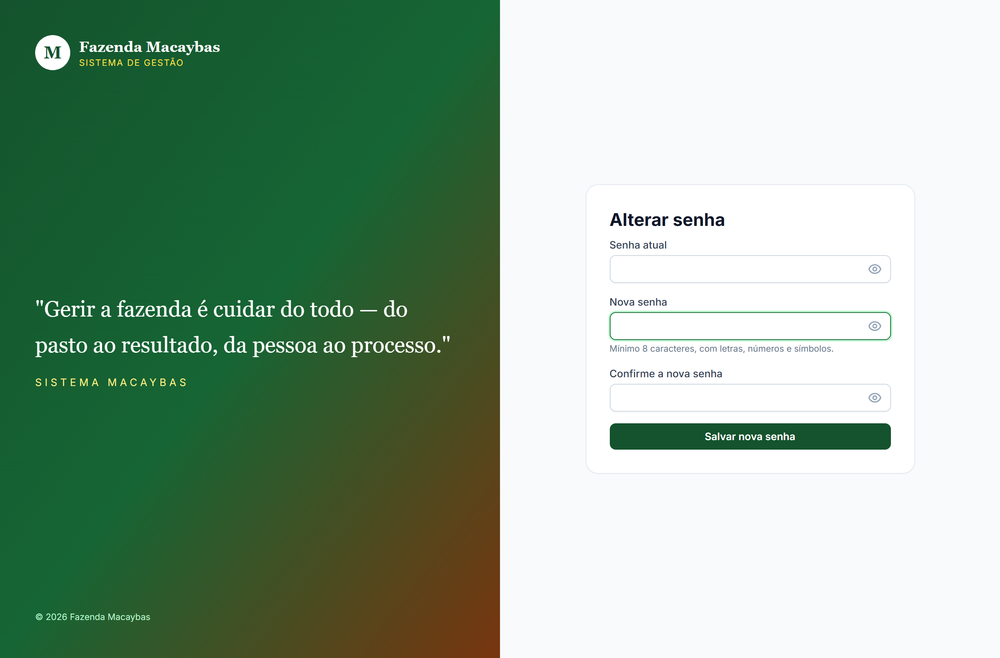
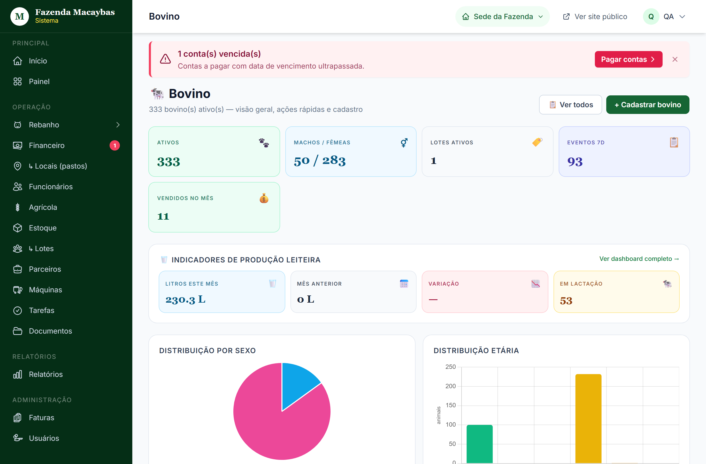
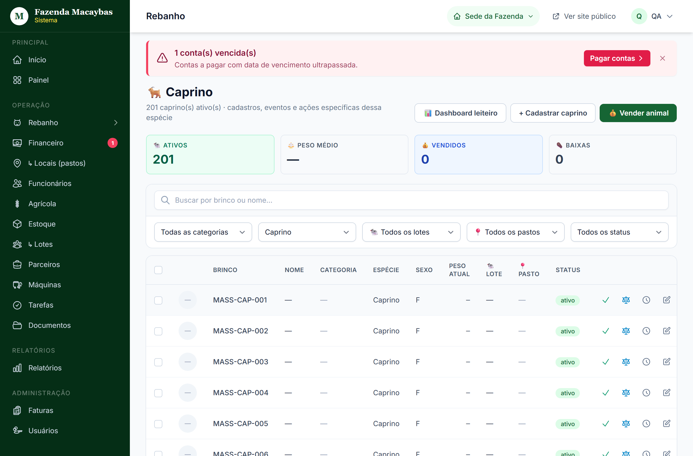
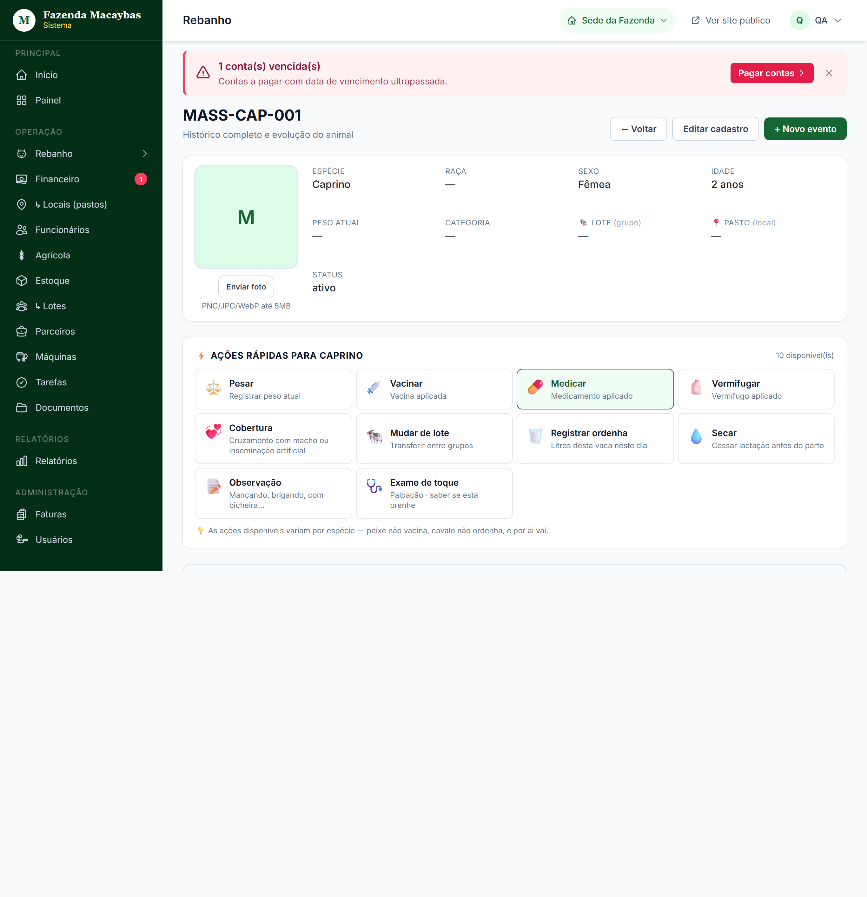
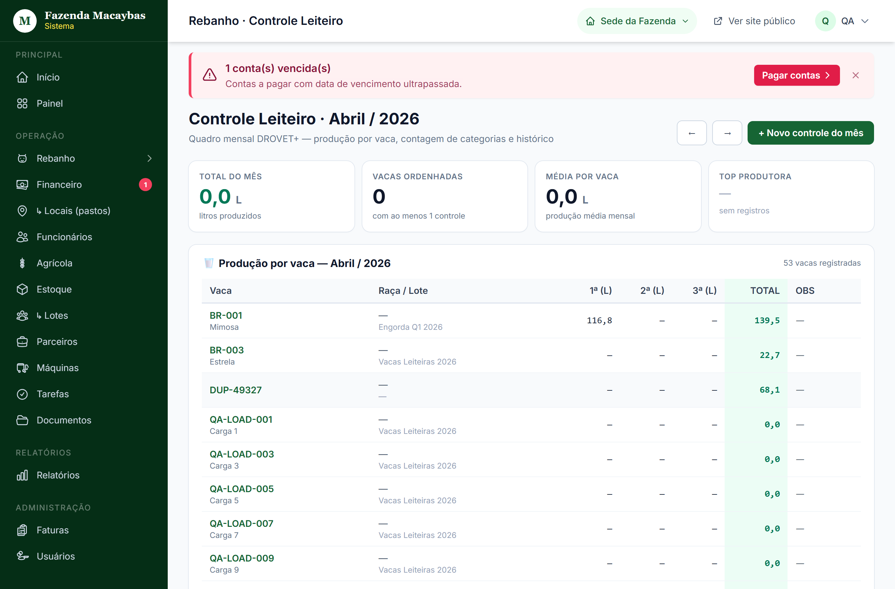
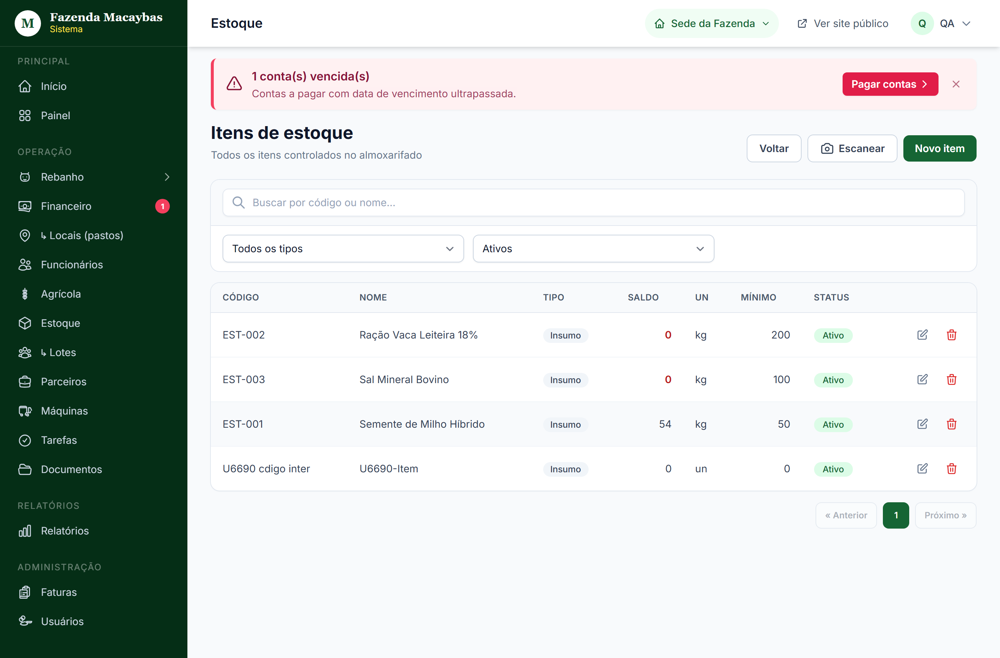
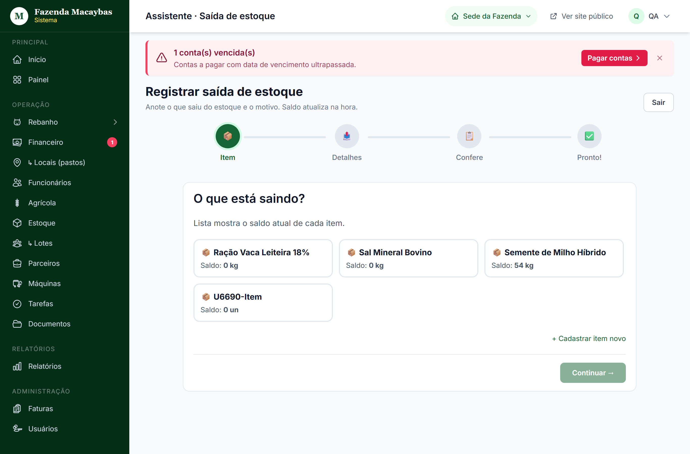
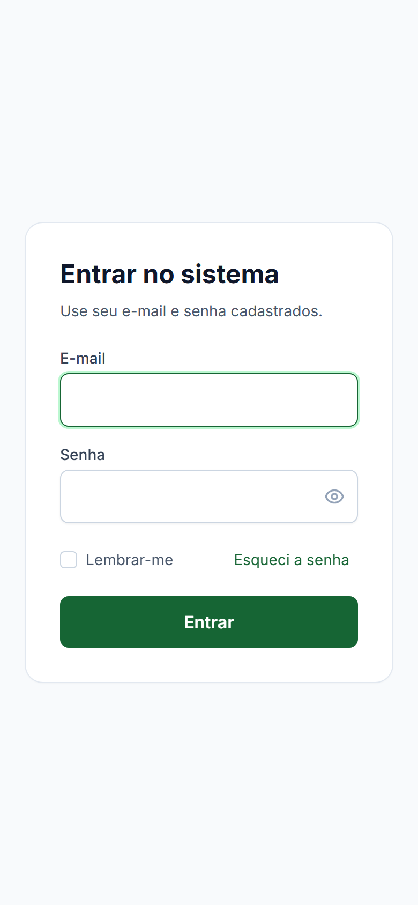

↑ Sumário
M
Manual do Usuário
Sistema de Gestão · Fazenda Macaybas
Tudo que você precisa saber pra usar o sistema com tranquilidade — do primeiro acesso até a venda do animal, do cadastro de despesas até o relatório anual. Computador e celular, todos os perfis, todas as funcionalidades.
Versão 1.0 · Abril de 2026
fazendamacaybas.com.br
Sumário
Clique em qualquer item para ir direto à seção. No final de cada seção, um botão "Voltar ao sumário" traz você de volta aqui.
🚀 Quick start (leia primeiro)
🐄 Rebanho · cobertura completa
🌾 Agrícola, 📦 Estoque, 🚜 Máquinas
✅ Tarefas, 📄 Documentos, 🤝 Parceiros
📱 Celular / Tablet (Mobile)
★ Como usar este manual
Pra extrair o máximo dele em 2 minutos
💡 Em uma linha
Este manual cobre 100% do sistema. Você não precisa ler tudo — só a parte que está fazendo agora.
A tela de Início — sua porta de entrada · use os atalhos pra encontrar tudo
- Menu lateral: todos os módulos do sistema (Rebanho, Financeiro, Agrícola, etc.).
- Saudação personalizada: "Bom dia/Boa tarde" + seu nome.
- Cards de ações rápidas: as ações mais usadas — clique pra começar.
- Topbar: trocar fazenda + dropdown do seu usuário.
3 jeitos de usar
2
Quero fazer uma coisa específica (ex.: vender um boi, registrar pesagem, anexar nota fiscal) — abra o
Sumário e clique no item. Cada seção tem o passo a passo da ação.
Convenções deste manual
| Símbolo | Significa |
|---|
| 💡 Verde (Dica) | Truque pra ser mais rápido ou aproveitar melhor |
| ℹ️ Azul (Info) | Esclarecimento que evita confusão |
| ⚠️ Amarelo (Aviso) | Atenção: ler antes de fazer |
| ❗ Vermelho (Perigo) | Cuidado: pode causar dano nos seus dados |
| ❓ Verde-claro | Pergunta-resposta direta (FAQ) |
| 🔵 Azul tracejado | Cenário real (fluxo completo de uma situação) |
| 1 2 3 (números) | Passo a passo numerado de uma ação |
| 🔴 Bolinha vermelha numerada | Indica um item dentro do print da tela |
ℹ️ Linguagem usada
Tentamos usar palavras do dia a dia da fazenda — boi, vaca, lote, pasto, brinco, NF — e não termos técnicos. Quando uma palavra técnica é necessária (KPI, dashboard, hub), está explicada no
Glossário.
Quando algo der errado
- Olha as Soluções rápidas — cobre os erros mais comuns.
- Lê a FAQ — pode ter resposta direta.
- Se ainda não resolver, vai em Como pedir ajuda com o screenshot do erro.
↑ Voltar ao sumário
★ Primeiros passos · 5 coisas pra fazer no Dia 1
Roteiro do dono no primeiro dia · 30 minutos
O sistema te dá liberdade para cadastrar tudo na ordem que você quiser, mas existe uma ordem mais inteligente que evita retrabalho. Siga este roteiro no Dia 1:
Tela de Usuários · onde você cadastra a equipe (Passo 3 do roteiro)
- Sidebar → Usuários: aqui você gerencia quem tem acesso ao sistema.
- + Novo usuário: cadastra cada funcionário (envia senha temp por e-mail).
- Filtros e busca: encontra um funcionário rápido (em fazendas grandes).
- Ações inline: editar perfil · resetar senha · ativar/inativar.
🎯 Resultado desejado no fim do Dia 1
Você terá: senha trocada, equipe convidada, principais fornecedores cadastrados, primeiros animais ou plantios cadastrados. Pode operar normalmente do Dia 2 em diante.
Passo 1 · Trocar a senha temporária
1
Você recebeu por e-mail uma senha temporária. Acesse
app.fazendamacaybas.com.br e entre. O sistema te leva direto pra tela de troca de senha. Crie uma nova forte e anote num lugar seguro.
Tempo: 2 min. · Detalhes em
seção 4.
Passo 2 · Atualizar nome, foto e dados da fazenda
2
Clique no avatar (canto superior direito) → "Alterar foto" e adicione uma foto sua. Em Configurações da Fazenda, confirme: nome, CNPJ/CPF, endereço, IE/IM se for o caso. Esses dados aparecem em relatórios e impressões. Tempo: 5 min.
Passo 3 · Cadastrar a equipe (funcionários que vão usar o sistema)
3
Em
Usuários → "+ Novo usuário", cadastre cada pessoa que vai usar o sistema (gerente, vet, ordenhador, financeiro). Escolha o perfil que combina com a função (veja
seção 3). O sistema envia senha temp por e-mail pra cada um.
Tempo: 1 min por pessoa. · Detalhes em
seção 44.
💡 Não cadastre a equipe inteira de uma vez
Comece pelos 2-3 que vão usar mais (você + gerente + vet, por exemplo). Adicione os outros conforme precisar.
Passo 4 · Cadastrar parceiros principais (clientes/fornecedores)
4
Em
Parceiros → "+ Novo parceiro", cadastre os 3-5 mais usados:
- Fornecedor de ração
- Fornecedor de medicamentos/vacinas
- Frigorífico ou laticínio (cliente principal)
- Posto de combustível
Tempo: 5 min. Os outros entram à medida que aparecem em transações. Detalhes em
seção 43.
Passo 5 · Cadastrar dados operacionais (escolha um caminho)
5a
Tem rebanho? Vai em
Rebanho → escolhe a espécie. Cadastre 2-3 animais primeiro pra entender a tela. Quando estiver confortável, cadastre o resto.
Seção 12.
5b
Tem lavoura? Vai em
Agrícola → Talhões → "+ Novo talhão". Cadastre os talhões que existem. Depois cadastre plantios atuais.
Seção 34.
5c
Tem máquinas? Vai em
Máquinas → Veículos → "+ Novo veículo". Cadastre caminhonete, trator, implementos.
Seção 39.
⚠️ Cadastros financeiros antigos
Você NÃO precisa cadastrar transações financeiras antigas. Comece a registrar do mês atual em diante. Receitas e despesas históricas só servem se forem importantes pra um relatório específico — e nesse caso vale cadastrar manualmente as principais.
Após o Dia 1
O sistema cresce com o uso. Daqui pra frente:
- Toda manhã: abra o Painel pra ver o que vence hoje (tarefas, contas).
- No campo: use o celular pra registrar pesagens, vacinas, ordenhas (seção 49).
- Ao final do mês: confira Relatórios e bata os números do livro caixa.
↑ Voltar ao sumário
★ Cenários reais · fluxos completos amarrados
"Como faço o ciclo todo dessa situação?"
O resto do manual é organizado por tela. Esta seção é organizada por situações reais da fazenda — você vê o fluxo do início ao fim, e cada passo aponta a seção que detalha aquela ação.
🐄 Cenário 1 · Comprei 50 bezerros pra engordar e revender em 18 meses
Início — momento da compra:
- Cadastre o vendedor em Parceiros (se for novo). Seção 43
- Crie um lote: Rebanho → Lotes → "+ Novo lote", ex.: "Engorda 2026 - Compra Junho". Seção 22
- Cadastre cada bezerro: Bovino → "+ Cadastrar bovino". Categoria "Corte", origem "Comprado", informa fornecedor, data, valor unitário, lote criado acima. Repita pros 50 (sistema mantém dados do último cadastro como sugestão). Seção 12
- O sistema cria automaticamente uma despesa pendente com o valor total. Você só precisa marcar como paga quando quitar. Seção 29
Durante o ciclo (cada 60-90 dias):
- Pesa todos: dashboard Bovino → "Pesar" → digita brinco e peso, salva, próximo. Seção 15
- Vacina contra aftosa, brucelose, etc. (vacinação em lote inteiro pra economizar tempo). Seção 16
- Move pra novo pasto quando precisar. Seção 18
- Registra cada compra de ração/insumo em Estoque → Receber mercadoria — gera despesa e atualiza estoque. Seção 37
Fim — venda:
- Hub Início → "Vender animal" → modo "Múltiplos" → marca os 50 do lote. Seção 25
- Comprador (frigorífico), preço por arroba, total automático.
- Salva. Sistema marca os 50 como "vendido" + cria receita no financeiro.
- Quando o frigorífico pagar, marcar como pago em Financeiro → Transações e anexar comprovante. Seção 29
Pra ver lucro do ciclo: em Relatórios, filtra período da compra à venda. Receita de venda menos despesas (compra + ração + vacinas + manutenção) = lucro.
🥛 Cenário 2 · Quero acompanhar a produção de leite das minhas vacas
- Cadastre as vacas em Bovino com Categoria "Leite" ou "Misto". Seção 12
- Crie um lote "Vacas em Lactação" e mova as ordenhadas pra ele. Seção 22
- Toda ordenha: Dashboard Bovino → "Registrar ordenha" → escolhe vaca, informa litros (manhã/tarde). Pode usar o celular no curral. Seção 17
- Pra ver consolidado mensal: Rebanho → Controle Leiteiro. Mostra cada vaca em uma linha, dias do mês, quem é a top, média. Seção 24
- Pra ver evolução individual: abre o animal → aba "Evolução leiteira" — gráfico mostrando produção mensal. Seção 14
🌽 Cenário 3 · Plantei soja num talhão · do plantio à colheita
- Cadastre o talhão (se ainda não tem): Agrícola → Talhões → "+ Novo talhão" com área em hectares. Seção 34
- Cadastre a safra: ex. "Safra 2025/26 - Verão".
- Cria o plantio: Agrícola → Plantios → "+ Novo plantio", escolhe talhão, cultura "Soja", safra, área plantada, data.
- Cadastra os insumos no estoque (sementes, herbicida, fertilizante) com valor unitário.
- Aplicações ao longo do ciclo: Hub Início → "Aplicar produto". Pra cada aplicação, sistema reduz estoque + cria despesa automática. Seção 35
- No dia da colheita: abre o plantio → "Registrar colheita" → informa kg colhidos.
- Quando vender a produção: Financeiro → "+ Nova receita", categoria "Venda de safra", vincula ao plantio. Seção 28
- Lucro da safra: Relatórios filtra por período da safra. Receita - despesas vinculadas = lucro.
📱 Cenário 4 · Funcionário no campo · ciclo de uma tarefa
Você (dono/gerente) atribui:
- Tarefas → "+ Nova tarefa" → "Vacinar lote A com Aftosa". Atribui ao Funcionário João, prioridade alta, prazo amanhã. Seção 41
João (no celular, no campo):
- Recebe e-mail/notificação. Abre o sistema no celular. Vê a tarefa em Tarefas com badge urgente.
- Vai no curral. Vacina os animais. Volta no celular, abre a tarefa, marca "Concluir".
- Anexa foto do lote vacinado (opcional). Pode também registrar a vacinação em Bovino → Vacinar lote. Seção 16
Você vê o resultado:
- Tarefa muda pra "Concluída". Aparece foto da execução.
- Histórico de cada animal vacinado tem o evento "Vacinação Aftosa · 28/04/2026".
↑ Voltar ao sumário
💰 Cenário 5 · Como sei o que vence essa semana (vacinas, contas, documentos, tarefas)?
O sistema concentra os alertas em quatro lugares:
| Tipo | Onde aparece | Como agir |
|---|
| 📅 Tarefas com prazo próximo |
Tarefas · badge na sidebar |
Filtra "Vencendo nos próximos 7 dias" e executa |
| 💸 Contas a pagar |
Hub Financeiro · card "A pagar nos próximos 30d" |
Clica no card, lista filtrada, paga uma a uma |
| 💰 Contas a receber |
Hub Financeiro · card "A receber nos próximos 30d" |
Confere se chegou o pagamento; cobra se atrasou |
| 📄 Documentos vencendo |
Documentos · destaque vermelho |
Renova certificado / contrato e atualiza no sistema |
| 🐄 Vacina próxima do prazo |
Dashboard da espécie · card "Vacinas em atraso" |
Vacina e registra o evento |
| 📦 Estoque baixo |
Estoque · item em amarelo na lista |
Compra reposição (e usa "Receber mercadoria" pra entrada) |
| 💳 Fatura do sistema |
Faturas |
Paga e envia comprovante |
💡 Rotina sugerida
Toda segunda de manhã, abra o
Painel + Hub Financeiro. Em 5 minutos você tem uma visão completa do que precisa ser feito na semana.
🆕 Cenário 6 · Cadastrei um animal mas a raça/categoria que precisava não existe
Os campos com lista (raça, categoria, fornecedor) aceitam cadastro inline:
- Clica no campo, digita o nome novo.
- Aparece opção "+ Adicionar nova: [o que digitou]".
- Clica e ela já fica disponível pra esse cadastro e os próximos.
Funciona em: raça, categoria, fornecedor (parceiro), reprodutor, vacina, medicamento, tipo de manutenção. Pra editar/excluir cadastros existentes, vai na página de configuração de cada lista (geralmente em Administração).
↑ Voltar ao sumário
1. O que é o sistema
Em uma frase: tudo que sai do papel e da planilha vai pro sistema
O Sistema de Gestão Fazenda Macaybas é uma ferramenta para administrar uma fazenda inteira — do cadastro de cada animal ao lançamento da despesa do mês — sem precisar de planilha do Excel, caderno na cozinha ou WhatsApp espalhado.
O que dá pra fazer no sistema
| Área | Você consegue |
|---|
| 🐄 Rebanho | Cadastrar animais, registrar pesagem, vacinação, mortalidade, ordenha. Vender com a receita já caindo no financeiro. |
| 💰 Financeiro | Lançar receitas e despesas, marcar como pagas, anexar comprovante, ver saldo do mês, controlar fluxo de caixa. |
| 🌾 Agrícola | Cadastrar talhões, plantios, safras e aplicações de defensivos. |
| 📦 Estoque | Controlar entradas e saídas de insumos (ração, sementes, medicamentos), com alerta de estoque baixo. |
| 🚜 Máquinas | Cadastrar veículos e implementos, registrar manutenções com custo. |
| ✅ Tarefas | Atribuir tarefas a funcionários, com prazo e prioridade. |
| 📄 Documentos | Guardar contratos, NFs, certificados sanitários com data de vencimento. |
| 🤝 Parceiros | Cadastrar clientes e fornecedores, ver histórico de cada um. |
| 📊 Relatórios | Visão consolidada de cada módulo com filtros por período. |
| 👥 Usuários | Cadastrar funcionários, definir perfil e o que cada um pode fazer. |
💡 Princípio do sistema
Tudo que você registra em um lugar atualiza automaticamente nos outros. Vendeu um boi → animal sai do rebanho ativo + receita aparece no financeiro. Aplicou herbicida no talhão → estoque do herbicida cai + despesa entra no financeiro. Sem retrabalho.
Para quem é
O sistema atende a fazenda inteira — do dono ao funcionário no campo. Cada perfil vê apenas o que precisa pro seu trabalho. Detalhes em Perfis de usuário.
↑ Voltar ao sumário
2. Conceitos básicos
Quatro palavras que aparecem o tempo todo
🏠 Fazenda
É o "endereço" do seu negócio. Pode ser uma só (Sede) ou várias (Sede + Filial 1 + Retiro Norte). Cada animal, plantio, máquina, despesa pertence a UMA fazenda específica. Quando você tem mais de uma, aparece um seletor no topo da tela pra alternar — vide seção 9.
👤 Usuário
É a pessoa que entra no sistema com e-mail e senha. Cada usuário tem um perfil (dono, gerente, vet…) que define o que ele consegue fazer.
📅 Evento
Toda ação registrada na vida de um animal ou lote — pesagem, vacinação, ordenha, mortalidade, venda — é um evento. Os eventos formam a Linha do tempo do animal, que é o histórico completo dele.
📦 Lote
Agrupamento de animais que andam juntos. Para Bovino e Equino, lote é organizacional ("Vacas Leiteiras 2026"). Para Ave e Peixe, o sistema gerencia o lote inteiro como uma massa de cabeças (você não cadastra cada galinha; cadastra um lote de 500 com peso médio).
ℹ️ Importante
Os números do seu rebanho, financeiro e estoque
nunca precisam ser conferidos manualmente entre telas. O sistema usa fonte única de verdade — se vendeu 1 boi, todas as telas mostram o número novo na mesma hora.
↑ Voltar ao sumário
3. Perfis de usuário
O que cada perfil pode acessar e fazer
São 9 perfis, cada um com permissões diferentes. O dono define qual perfil cada funcionário tem na tela Usuários.
🟢 Dono da fazenda
Acesso total. Vê todos os módulos, pode criar/editar/excluir tudo, gerencia funcionários e perfis. É a pessoa que assinou o contrato do sistema.
🔵 Gerente
Operação completa: rebanho, financeiro, agrícola, estoque, máquinas, tarefas. Não pode mexer em usuários (cadastrar funcionários é só do dono).
🩺 Veterinário
Foco no rebanho clínico: cadastra animais, registra vacinações, medicações, mortalidade, controle leiteiro. Não acessa Financeiro nem Agrícola.
🌽 Agrônomo
Foco no agrícola: talhões, plantios, safras, aplicações de defensivo. Não acessa Rebanho nem Financeiro operacional.
💼 Financeiro
Foco em receitas, despesas, fluxo de caixa, faturas. Não acessa Rebanho nem Agrícola.
📋 Administrativo
Documentos e parceiros. Visão limitada de outros módulos.
🏃 Funcionário (operacional)
Tarefas atribuídas a ele + ações rápidas no rebanho (pesar, vacinar). Não acessa financeiro, relatórios, configurações.
🔍 Auditor
Visão de leitura em todos os módulos. Pode ver tudo, não pode editar nada.
👁️ Visitante
Acesso muito limitado. Apenas tela de Início. Útil para mostrar o sistema a alguém sem dar acesso real.
⚠️ Como mudar o perfil de alguém
Vai em
Usuários → clica no funcionário → Editar → escolhe novo perfil → salvar. O acesso muda na próxima vez que ele logar.
↑ Voltar ao sumário
4. Como entrar no sistema
Login + primeiro acesso + esqueci a senha
Endereço do sistema
Abra o navegador (Chrome, Firefox, Edge ou Safari) e digite:
- Funcionário/dono da fazenda:
app.fazendamacaybas.com.br
- Administrador da plataforma:
fazendamacaybas.com.br
- E-mail: o e-mail que você cadastrou (ou o dono cadastrou pra você).
- Senha: na primeira vez, é a senha temporária recebida por e-mail.
- Botão Entrar: clique pra acessar.
- Esqueci minha senha: se não lembra, clique aqui.
Primeiro acesso
Quando você entra com a senha temporária, o sistema te leva direto pra tela de troca de senha. Você precisa criar uma nova antes de continuar.
1
Digite a senha temporária recebida por e-mail.
2
Crie uma nova senha forte: pelo menos 8 caracteres, com letras, números e um símbolo.
3
Confirme digitando a nova senha de novo.
4
Clique em "Salvar". O sistema te leva pra tela de Início.
⚠️ A nova senha é a única que vai funcionar
Anote em local seguro. A senha temporária deixa de funcionar após a primeira troca.
Esqueci minha senha — como recuperar
1
Na tela de login, clique em "Esqueci minha senha".
2
Digite seu e-mail e clique em "Enviar link".
3
Aparece a mensagem: "Se o e-mail estiver cadastrado, você receberá um link em alguns minutos." Confira sua caixa de entrada (e o spam, por garantia).
4
Clique no link do e-mail (válido por 1 hora). Crie uma senha nova. Pronto.
ℹ️ Por que não diz se o e-mail existe?
Por segurança. Se dissesse "e-mail não cadastrado" para qualquer pessoa, alguém mal-intencionado conseguiria descobrir quais e-mails têm conta no sistema. A mensagem é genérica de propósito.
↑ Voltar ao sumário
5. Trocar minha senha / minha foto
Cuidando do seu perfil
Trocar minha senha (depois de já estar logado)
Avatar (topo direito) · clique abre o menu
- Avatar: clique aqui pra abrir o menu de opções da sua conta.
- Alterar foto: troca sua foto de perfil.
- Alterar senha: vai pra tela de troca de senha.
- Sair: fecha sua sessão (importante em PCs compartilhados).
1
Clique no seu avatar (canto superior direito) → escolha "Alterar senha" no menu.
2
Digite a senha atual e a senha nova (mesmas regras: 8+ chars, letras, números, símbolo).

Tela de alterar senha
ℹ️ A nova senha não pode ser igual à atual
O sistema bloqueia troca pela mesma senha (não fazia sentido).
Trocar minha foto de perfil
1
Clique no seu avatar → "Alterar foto do perfil".
2
Escolha uma imagem do seu computador/celular. JPG ou PNG, máximo 5MB.
3
Sistema corta a foto em formato circular automático e exibe.
Sair do sistema (logout)
Clique no seu avatar → "Sair". Volta pra tela de login. Sempre saia em computadores compartilhados.
↑ Voltar ao sumário
6. Tela de Início
"O que você quer fazer?" · ponto de partida
A tela de Início é o seu ponto de partida todos os dias. Em vez de menus e relatórios, ela pergunta diretamente: "O que você quer fazer agora?" e mostra os atalhos para as ações mais comuns.
Tela de início no computador
- Menu lateral: todos os módulos. Seções "Operação" e "Administração" agrupam telas similares.
- Saudação personalizada: "Bom dia/Boa tarde/Boa noite, [Seu nome]". Muda conforme o horário.
- Cards de ações rápidas: cada card abre um modal de cadastro rápido sem sair da tela.
- Topo: troca de fazenda (se >1) e dropdown do seu usuário.
↑ Voltar ao sumário
7. Painel
Visão geral · saldo, rebanho e tarefas em uma tela
O Painel mostra os números mais importantes da sua fazenda em tempo real — receitas e despesas do mês, saldo, total de animais ativos, tarefas pendentes. Tela ideal para abrir de manhã e ver onde está cada coisa.

Painel · visão geral da operação
Os 4 cards principais do topo
| Card | Mostra | Clicar te leva pra… |
|---|
| 💰 Receitas do mês | Soma das receitas pagas | Lista filtrada de receitas |
| 💸 Despesas do mês | Soma das despesas pagas | Lista filtrada de despesas |
| 🟰 Saldo do mês | Receitas menos despesas | Detalhamento |
| 🐄 Rebanho | Total de animais ativos | Hub do Rebanho |
↑ Voltar ao sumário
8. Como navegar
Sidebar (menu lateral) e Topbar (barra superior)
Menu lateral (sidebar)
O menu lateral organiza os módulos em três grupos:
- Principal: Início e Painel
- Operação: Financeiro, Rebanho, Agrícola, Estoque, Máquinas, Funcionários, Tarefas, Documentos, Parceiros
- Relatórios: Relatórios consolidados
- Administração: Faturas, Usuários, Perfis e permissões
O item Rebanho tem submenu — clica na seta pra abrir os atalhos por espécie (Bovino, Equino, Suíno…). Cada espécie tem o número de animais ativos ao lado.
Topbar (barra do topo)
A barra superior tem:
- Título da página — onde você está agora
- Seletor de fazenda — se sua conta tem mais de 1 farm
- Avatar e dropdown — alterar foto, alterar senha, sair
↑ Voltar ao sumário
9. Trocar de fazenda
Quando sua conta tem mais de uma unidade
Se sua empresa tem várias fazendas no sistema (Sede, Filial 1, Retiro), você precisa escolher qual delas vai operar. Cada fazenda tem seus próprios animais, contas, plantios, etc.
Tela de seleção · cada fazenda em um card
- Lista de fazendas: todas as fazendas que sua conta tem acesso.
- Fazenda ativa: a que você está usando agora (destacada em verde).
- Outras fazendas: clique pra trocar — sistema atualiza tudo (animais, contas, etc.).
1
No topo da tela, ao lado do seu avatar, aparece um botão verde com o nome da fazenda atual (ex.: "Sede da Fazenda").
2
Clique nesse botão. Abre um menu com as outras fazendas que você tem acesso.
3
Clique na fazenda desejada. O sistema atualiza tudo — animais, financeiro, etc. — pra mostrar só os dados daquela.
ℹ️ Quando o seletor não aparece
Se a sua conta só tem uma fazenda, o seletor fica oculto. Aparece automaticamente quando o dono cadastra uma segunda fazenda.
↑ Voltar ao sumário
10. Hub do Rebanho
Sua porta de entrada pro rebanho
Quando você clica em "Rebanho" no menu, abre o Hub: uma tela com card por espécie cadastrada. Cada card mostra a quantidade ativa daquela espécie. Clique no card pra abrir o dashboard daquela espécie.

Hub Rebanho · uma tela por espécie
O Hub também mostra:
- Total Ativo: soma de todas as cabeças de todas as espécies
- Atalhos pra Lotes e Locais (pastos)
↑ Voltar ao sumário
11. As 11 espécies disponíveis
Cada uma com manejo adaptado
O sistema vem com 11 espécies pré-cadastradas. Cada uma tem o seu modo próprio de manejo — define quais ações fazem sentido (vaca dá leite, galinha põe ovo, peixe não vacina, etc.). Veja como elas são organizadas:
| Espécie | Como cuidar | Tipo de manejo | Ações típicas |
|---|
| 🐄 Bovino | Corte, leite ou misto | Individual (com brinco) | Pesar · vacinar · ordenhar · cobertura · parto · vender |
| 🐎 Equino | Cavalo / égua | Individual | Pesar · ferrageamento · vacinar |
| 🐖 Suíno | Porco / matriz | Individual | Pesar · vacinar · cobertura · desmame |
| 🐐 Caprino | Cabra leiteira | Individual | Pesar · vacinar · ordenhar |
| 🐑 Ovino | Ovelha pra lã | Individual | Pesar · vacinar · tosquia |
| 🐔 Ave | Galinha de postura ou corte | Por lote (galpão inteiro) | Postura diária · biometria · alimentação · mortalidade |
| 🐟 Peixe | Aquicultura (tilápia, etc.) | Por lote (tanque inteiro) | Biometria · qualidade da água · alimentação |
| 🐶 Cão | Cão da fazenda | Individual | Vacinar · vermifugar · observação |
| 🐱 Gato | Gato da fazenda | Individual | Mesmas ações do cão |
| 🐃 Búfalo | Búfalo de leite ou corte | Individual | Mesmas ações do Bovino |
| 🐰 Coelho | Cunicultura | Individual | Pesar · vacinar · cobertura · parto |
Diferença entre "Individual" e "Lote agregado"
Individual: você cadastra cada animal com brinco/identificação. Bovino, Equino, Suíno, Caprino, Ovino, Cão, Gato, Búfalo, Coelho seguem esse modelo.
Lote agregado: você cadastra o lote inteiro com a quantidade de cabeças (ex.: "Lote galpão A — 500 galinhas"). Ave e Peixe usam esse modelo porque seria inviável cadastrar cada uma.
Dashboard de espécie · exemplo (Bovino)
Cada espécie tem o seu dashboard adaptado. Abaixo o exemplo do Bovino — KPIs no topo (ativos, peso médio, lotes, ordenhadas), produção leiteira e gráficos de distribuição por sexo e por etária:

Dashboard Bovino · KPIs + indicadores leiteiros + gráficos
Variações por espécie
O dashboard é adaptado à espécie. Cada uma mostra apenas os KPIs e ações que fazem sentido pra ela:
| Espécie | O que muda no dashboard |
|---|
| 🐄 Bovino | KPIs leiteiros (litros mês, vacas em lactação), gráfico distribuição por sexo e etária, ações: pesar, vacinar, ordenhar, cobertura, mover, vender |
| 🐎 Equino | Sem leite. Adiciona ferrageamento. KPIs: ativos, peso médio, atividade |
| 🐖 Suíno | Sem leite. KPIs: ativos, peso médio. Reprodução: cobertura + desmame |
| 🐐 Caprino / 🐃 Búfalo | Igual Bovino (leite + corte). Mesma tela, dados próprios |
| 🐑 Ovino | Sem leite. Adiciona tosquia. KPIs: ativos, lã estimada |
| 🐔 Ave (lote) | KPIs por lote: cabeças, postura diária, mortalidade. Sem cadastro individual |
| 🐟 Peixe (lote) | KPIs: cabeças, biomassa, qualidade da água. Ações: alimentação, biometria amostral |
| 🐶 Cão / 🐱 Gato | Modo pet: foco em vacina/vermifugar/observação. Sem reprodução comercial |
| 🐰 Coelho | Cunicultura: pesar, cobertura, parto. Cria por matriz |
ℹ️ Como acessar o dashboard de cada espécie
Sidebar →
Rebanho → escolhe a espécie no submenu (aparece o número de animais ativos ao lado de cada uma).
↑ Voltar ao sumário
12. Cadastrar animal individual
Passo a passo · Bovino, Equino, Suíno, Caprino, Ovino, Cão, Gato, Búfalo, Coelho
Onde está o botão
No dashboard da espécie (clique em Bovino no menu lateral, por exemplo), aparece um botão verde grande "+ Cadastrar bovino" no canto superior direito.
Wizard de cadastro · escolha a espécie primeiro
- Stepper: Espécie → Identificação → Onde fica → Pronto (4 passos).
- Que tipo de animal?: a espécie define quais perguntas vêm depois (boi tem categoria leite/corte; peixe não tem isso).
- Cards das espécies: clique no card. Cada um mostra o nome + se é manejo individual ou lote.
- Bovino, Búfalo, Caprino…: animais individuais (cada um com brinco).
- Ave, Peixe: lote agregado (cadastra o lote inteiro com qtd cabeças).
Passo a passo
1
Identificação (obrigatório): número do brinco ou código único. Ex.: "BR-001". É como o sistema vai chamar esse animal pra sempre.
2
Nome (opcional, mas recomendado): "Mimosa", "Estrela". Facilita identificar.
3
Sexo (obrigatório): Macho ou Fêmea.
4
Categoria: Corte, Leite, Reprodução, Misto. Define o uso do animal e habilita ações específicas (ex.: ordenha só aparece para "Leite" ou "Misto").
5
Data de nascimento (obrigatório pra Bovino, Caprino, Ovino e Búfalo): formato dd/mm/aaaa.
6
Peso atual: em quilos. O sistema usa isso pra média de peso médio do rebanho.
7
Raça: escolha da lista cadastrada. Se não tem, pode adicionar nova.
8
Lote: o grupo de animais que ele pertence ("Vacas leiteiras 2026"). Pode deixar vazio.
9
Local (pasto/curral): onde ele tá fisicamente.
10
Origem: nascido na fazenda, comprado, doado. Se comprado: informa o fornecedor (parceiro), data e valor.
11
Foto (opcional): tira ou faz upload. Útil pra identificar visualmente depois.
12
Salvar. O animal aparece na lista com badge "ativo".
💡 Cadastro em massa?
Se você tá cadastrando 50 bezerros do mesmo lote/raça/data nascimento, o sistema preserva os dados do último cadastro como sugestão. Você só muda o brinco e dispara o próximo.
↑ Voltar ao sumário
13. Listagem de animais
Onde encontrar, filtrar e pesquisar

Lista de animais com cards de KPI no topo
Cards de resumo (no topo)
| Ativos | Total de animais com status "ativo" da espécie filtrada |
| Peso médio | Média do último evento de pesagem de cada animal |
| Vendidos | Vendidos no mês corrente |
| Baixas | Mortes/abates no mês corrente |
Pesquisa
Caixa "Buscar por brinco ou nome..." no topo. Digite parte do brinco ou nome e a lista filtra em tempo real.
Filtros
Clique em "Mostrar filtros" pra abrir os filtros adicionais:
- Categoria: leite, corte, reprodução…
- Lote: filtra animais de um lote específico
- Local: filtra animais que estão num pasto
- Status: ativo, vendido, morto, abatido
Ações em cada linha
Em cada animal da lista aparecem ícones do lado direito:
- ✓ verde: Status ativo (clica pra ver outros status)
- ⚖️ azul: Pesar rápido
- 🕒 cinza: Ver histórico (linha do tempo)
- ✏️ cinza: Editar
- 🗑️ vermelho: Excluir
↑ Voltar ao sumário
14. Linha do tempo do animal
O histórico completo de cada bicho
Clique no nome de qualquer animal da lista. Abre uma tela com o histórico completo dele em três abas: Linha do tempo, Evolução de peso e (para leiteiras) Evolução leiteira.

Linha do tempo · todos os eventos do animal em ordem cronológica
Linha do tempo
Lista todos os eventos registrados (pesagem, vacinação, ordenha, mortalidade, etc.) em ordem do mais recente pro mais antigo. Cada evento mostra ícone, tipo, data e detalhes específicos.
Evolução de peso
Gráfico de linha mostrando o peso do animal ao longo do tempo (a partir das pesagens registradas). Útil pra ver se o animal está ganhando peso bem ou parado. Precisa de pelo menos 2 pesagens.
Evolução leiteira (só pra Bovino/Caprino/Búfalo leiteiros)
Gráfico de produção mensal de leite, somando as ordenhas registradas. Identifica quedas e picos.
ℹ️ "Pesagens registradas" no card
Quando o card mostra "0" e o aviso "Ainda sem avaliação", significa que você não pesou esse animal nenhuma vez. Registre uma pesagem (botão "+ Novo evento" → Pesar) e o gráfico começa.
↑ Voltar ao sumário
15. Pesar um animal
A ação mais comum no rebanho
Onde está
Tem 3 maneiras de pesar:
- No dashboard da espécie: card "Pesar" nas Ações Rápidas.
- Na lista de animais: ícone de balança ⚖️ na linha do animal.
- No show do animal: botão "+ Novo evento" → Pesar.
Wizard de pesagem · cada bolinha aponta um campo
- Stepper: você está no passo "O que pesar" (mostra os 4 passos do wizard).
- Animal individual: pesa um boi por vez (caso mais comum).
- Pesagem amostral / Biomassa: pra Ave/Peixe — pesa amostra e calcula peso médio.
- Lista de animais: toque no animal pra escolher. Mostra brinco, mãe e último peso.
- Continuar: avança pro próximo passo (informar o peso).
Passo a passo
1
Animal: digite o brinco ou nome (autocompleta). Mostra peso anterior pra comparação.
2
Peso (kg): ex. 425.5. Aceita decimais.
3
Data da pesagem: hoje por padrão. Pode mudar pra data passada.
5
Clique "Salvar". Aparece o toast verde de confirmação.
💡 Pesagem em massa
Se for pesar muitos animais de uma vez, use o atalho do dashboard da espécie. Cada Salvar limpa o campo Animal e mantém você no modal — basta digitar o próximo brinco.
↑ Voltar ao sumário
16. Vacinar / medicar / vermifugar
Eventos sanitários
Vacinação, medicação e vermifugação seguem o mesmo padrão: dashboard da espécie → ação rápida → preencher modal.
Wizard de vacinação · 5 modos de aplicar
- Stepper: passo "O animal" (escolher quem vacina).
- Um animal: vacina apenas um animal específico.
- Lote inteiro: vacina todos os animais de um lote (ex.: lote galinhas).
- Pasto inteiro: vacina todos que estão num pasto/curral.
- Escolher vários / Lote agregado: vacina seleção custom OU N de M cabeças.
Vacinação
1
Card "Vacinar" no dashboard da espécie.
2
Escolher: animal individual ou lote inteiro.
3
Preencher: nome da vacina, dose, via de aplicação (subcutânea, intramuscular, oral), responsável.
4
Salvar. Vacinação aparece no histórico de cada animal afetado.
Medicação
Igual à vacinação, mas com nome do medicamento e dose específica. Útil pra registrar tratamentos (antibiótico, anti-inflamatório).
Vermifugação
Idem. Sistema separa pra você ter histórico claro de quando cada animal foi vermifugado.
↑ Voltar ao sumário
17. Registrar ordenha
Para Bovino/Caprino/Búfalo leiteiros
A ordenha é registrada por animal, podendo informar até 3 ordenhas no mesmo dia (manhã, tarde, noite).
Controle leiteiro · cada vaca em uma linha, ordenhas em colunas
- Stepper: passo "A data" → "As vacas" → "Conferência" → "Pronto".
- Data: dia das ordenhas. Padrão = hoje.
- Cards das vacas: cada vaca em lactação aparece com campo pra litros.
- Salvar: persiste todas as ordenhas de uma vez no controle do mês.
1
Dashboard da espécie → card "Registrar ordenha".
2
Escolha a vaca/cabra/búfala.
3
Preencha:
- Litros 1ª ordenha (manhã)
- Litros 2ª ordenha (tarde)
- Litros 3ª ordenha (noite, opcional)
4
Salvar. Total do dia entra no Controle Leiteiro do mês.
ℹ️ Ordenha vs Controle Leiteiro
Ordenha = evento individual de uma vaca em um dia.
Controle Leiteiro = visão consolidada do mês inteiro de todas as vacas. As ordenhas individuais alimentam o Controle.
↑ Voltar ao sumário
18. Mudar de lote ou local
Movimentação de animais
Quando você quer mover um animal pra outro lote (organização) ou pra outro pasto/curral (localização física), usa a ação "Mudar de lote".
Wizard "Mover animal de lote" · 4 modos de selecionar
- Stepper: O animal → Pra qual lote vai → Conferência → Pronto.
- Um animal: move um específico (ex.: o boi mais novo da Sede).
- Lote inteiro: move todos os ativos de um lote pra outro.
- Pasto inteiro: move todos os animais de um pasto/curral.
- Escolher vários: seleção custom (ex.: 5 bezerros específicos).
1
Dashboard da espécie → card "Mudar de lote".
2
Escolha o animal (ou lote inteiro).
3
Selecione o lote de destino (opcional) e/ou o local de destino (pasto, curral).
4
Adicione observação (motivo da movimentação, por exemplo).
5
Salvar. Movimentação registrada no histórico, animal/lote atualizado.
Para lotes agregados (Ave/Peixe)
Pode transferir parte das cabeças de um lote pra outro. Ex.: separar 100 frangos do galpão A pro galpão B. O sistema decrementa o lote A e incrementa o lote B automaticamente.
↑ Voltar ao sumário
19. Cobertura, exame de toque, parto
Manejo reprodutivo
Cobertura
Registra a cobertura de uma fêmea por monta natural ou inseminação artificial.
1
Dashboard da espécie → "Cobertura".
2
Escolha a fêmea, informe o reprodutor (macho da fazenda) ou o sêmen utilizado, data e responsável.
Exame de toque (palpação)
Cerca de 60 dias após a cobertura, fazer o exame pra confirmar prenhez.
Exame de toque (palpação) · positivo cria tarefa de parto automática
- Stepper: A vaca → Resultado → Conferência → Pronto.
- Escolha a fêmea: lista mostra apenas vacas com cobertura registrada.
- Resultado: positivo (prenhe) ou negativo. Positivo cria tarefa "Registrar parto" auto.
- Salvar: registra evento e dispara tarefa programada.
1
Dashboard da espécie → "Exame de toque".
2
Escolha a fêmea, informe o resultado: positivo (prenhe) ou negativo.
3
Se positivo, o sistema cria automaticamente uma tarefa de "Registrar parto" pro veterinário/dono, programada pra data prevista do parto (~280 dias após cobertura).
Parto
Quando a tarefa de parto chegar, abre o wizard de parto:
- Confirma data e horário do parto
- Cadastra cada cria nascida (sexo, peso, identificação, status — viva/natimorta)
- O sistema vincula automaticamente a mãe à cria (linhagem)
↑ Voltar ao sumário
20. Mortalidade
Quando um animal morre ou é abatido
Registrar mortalidade tira o animal do "ativo" e registra a baixa.
Registrar morte · individual, lote, pasto, vários ou massa
- Stepper: O animal → O que aconteceu → Conferência → Pronto.
- Um animal: morte de um animal específico.
- Lote inteiro: morte de lote inteiro (ex.: doença em galinheiro).
- Pasto inteiro: todos os animais de um pasto/curral.
- Escolher vários / Lote agregado: seleção custom OU N de M cabeças.
1
Dashboard da espécie → "Mortalidade" / "Registrar morte".
2
Escolha o animal (individual) ou o lote (massa, pra Ave/Peixe).
3
Pra lote agregado: informe quantas cabeças morreram (ex.: 12 frangos do galpão A).
4
Causa: doença, predador, acidente, idade, abate sanitário.
6
Salvar. Animal vai pra status "morto" / lote tem cabeças decrementadas. Total do rebanho atualiza.
⚠️ Mortalidade em lote agregado zerado
Se você registra a morte de TODAS as cabeças de um lote (ex.: lote tinha 100, morreram 100), o sistema marca o lote com data de fim. O lote fica visível no histórico mas não conta mais como ativo.
↑ Voltar ao sumário
21. Apagar um evento errado
Quando você lançou pesagem com peso errado, vacinou o animal trocado, etc.
Vai acontecer. Pra desfazer:
1
Abra o animal pela lista (ou pelo ícone de timeline 🕒).
2
Vai pra aba "Linha do tempo".
3
Encontre o evento errado e clique no ícone de lixeira vermelha à direita do card.
Animal: BR-001 — Mimosa
Data: 28/04/2026 · 14:35
Peso registrado: 425,5 kg
❗ Ao apagar este evento, o peso atual do animal volta ao valor da pesagem anterior. Esta ação não pode ser desfeita.
Cancelar
Sim, apagar registro
Layout do modal de confirmação de exclusão
4
Aparece a confirmação "Apagar registro de [tipo]?". Confira data e clique "Sim, apagar registro".
5
O sistema mostra um aviso explicando exatamente o que aconteceu.
O que o sistema reverte ao apagar
| Tipo do evento apagado | O que reverte |
|---|
| Pesagem | peso_atual do animal volta ao valor da pesagem anterior |
| Venda | Animal volta a "ativo" + receita estornada (cria contra-lançamento no financeiro) |
| Mortalidade/Morte/Abate | Animal volta a "ativo" |
| Vacinação/Medicação/Outros | Apenas tira do histórico (sem reversão de estado) |
⚠️ Cuidado com apagar venda
Apagar evento de venda CRIA UM ESTORNO no financeiro (despesa de mesmo valor, descrita como "Estorno · venda do animal X"). É a forma correta de desfazer venda — preserva histórico e mantém saldo do caixa coerente.
↑ Voltar ao sumário
22. Lotes
Agrupar animais que andam juntos
Lote é o agrupamento organizacional. "Vacas Leiteiras 2026", "Engorda Galpão A", "Lote Cria Junho".

Lista de lotes
Cadastrar novo lote
1
Em Rebanho → Lotes, clique em "+ Novo lote".
2
Preencha: código (BL-001), nome, espécie, finalidade (corte/leite/postura/recria/engorda/outro).
3
Pra lote agregado (Ave/Peixe): informe quantidade inicial de cabeças e peso médio.
Cadastro de lote · agrupa animais por finalidade comum
- Espécie do lote *: define se é lote de bovinos, ovinos, etc.
- Nome do lote: um nome descritivo (ex.: "Engorda Q1 2026", "Vacas leiteiras").
- Código curto: usado em listagens (ex.: "ENG-2026-Q1", "LEITE").
- Para quê serve este lote? (opcional): finalidade — ajuda a organizar relatórios.
Excluir lote
Só dá pra excluir lote VAZIO (sem animais nem cabeças). Se tem cabeças, registre mortalidade total ou venda primeiro.
↑ Voltar ao sumário
23. Locais (pastos, currais, tanques)
Onde os animais ficam fisicamente
Local é o lugar físico. Tipos disponíveis: pasto, piquete, curral, baia, tanque, galpão, outro.

Lista de locais
Cadastrar local
Em Rebanho → Locais, "+ Novo local". Informe nome, tipo, capacidade (cabeças que aguenta) e observações. Salvar.
Diferença entre Lote e Local
Lote: agrupamento organizacional (pode misturar lotes em mesmo pasto).
Local: ponto físico onde estão os animais.
Um animal tem um lote (organizacional) e um local (físico). Pode pertencer ao "Lote Engorda 2026" e estar no "Pasto da Sede". Mover de um pasto pra outro NÃO muda o lote.
↑ Voltar ao sumário
24. Controle Leiteiro
Quadro mensal por vaca · só pra fazendas leiteiras
O Controle Leiteiro é a planilha mensal do gado leiteiro: cada vaca em uma linha, dias do mês nas colunas, ordenhas registradas.

Controle Leiteiro · Abril 2026
KPIs do topo
| Total do mês | Soma de litros de todas as vacas |
| Vacas ordenhadas | Vacas com pelo menos 1 ordenha no mês |
| Média por vaca | Total ÷ vacas ordenhadas |
| Top produtora | Quem mais produziu |
Como adicionar produção
Cada ordenha registrada (via dashboard espécie → "Registrar ordenha") aparece automaticamente aqui. Ou você pode usar o botão "+ Novo controle do mês" pra adicionar tudo de uma vez.
ℹ️ Navegação por mês
Use as setas ← → no topo pra navegar entre meses (abril, maio, etc.). O mês atual é o padrão.
↑ Voltar ao sumário
25. Vender animal (wizard)
A ação que mais gera valor · cuidado especial
Vender um animal é uma ação cara — gera receita, baixa o animal do ativo, atualiza o caixa. O sistema usa um wizard guiado em 5 passos pra você não errar.
Wizard de venda · 5 modos · cada bolinha aponta um modo
- Stepper: 6 passos guiados — O que vender, Seleção, Comprador, Preço, Conferir, Pronto.
- Um animal: vende um animal específico (ex.: o cavalo, a matriz).
- Vários animais: lista pra escolher (ex.: 5 bovinos pro frigorífico).
- Lote / tanque inteiro: vende todos os ativos de um lote ou tanque.
- Quantidade do lote / Por peso: massa sem identificar individual (300 frangos / 200 kg de tilápia).
Passo a passo
1
Modo de venda: escolha entre:
- Individual: vendendo 1 animal específico
- Múltiplos: vários animais, cada um identificado
- Lote inteiro: lote agregado (Ave/Peixe) inteiro
- Por quantidade: massa de cabeças sem identificação individual
- Por peso: vendendo X kg do lote
2
Selecionar animais/lote: marque os animais ou o lote a vender.
3
Comprador: escolha o cliente (cadastrado em Parceiros). Se não tiver, cadastra inline.
4
Valores: informe a unidade real do mercado:
- Bovino corte: arroba (R$/@)
- Bovino leite: cabeça (R$/cabeça)
- Suíno: kg (R$/kg)
- Ave/Peixe: cabeça ou kg
Sistema calcula o valor total automaticamente.
5
Forma de pagamento: à vista ou parcelado. Data prevista de recebimento.
6
Confirmar e Salvar. O sistema:
- Marca os animais como "vendido"
- Cria o evento de venda no histórico de cada um
- Cria a receita no Financeiro automaticamente
- Atualiza KPIs em tempo real
↑ Voltar ao sumário
26. Hub Financeiro
Receitas, despesas, faturas e saldo
Quando você clica em "Financeiro" no menu, abre o Hub Financeiro com saldo do mês, KPIs e atalhos.

Hub Financeiro
O que aparece no Hub
- Receitas do mês: soma das pagas
- Despesas do mês: soma das pagas
- Saldo do mês: receitas menos despesas
- Atrasadas: despesas vencidas e ainda não pagas
- A pagar nos próximos 30d: contas que vão vencer em breve
- A receber nos próximos 30d: receitas previstas
Atalhos rápidos: Lançar Despesa, Lançar Receita, Ver Transações.
↑ Voltar ao sumário
27. Cadastrar despesa
Quando você compra algo ou paga uma conta
Wizard de registrar despesa · 4 passos
- Stepper: O que pagou → Quanto foi → Conferência → Pronto.
- Descrição *: o que você comprou ou pagou (ex.: "Combustível no posto").
- Tipo de gasto: opcional. Se não tem na lista, pode criar tipo novo.
- Para quem pagou: opcional, pode cadastrar fornecedor novo daqui mesmo.
- Continuar: avança pro passo "Quanto foi" (valor + data).
Passo a passo
1
Em Financeiro → Transações, clique em "+ Nova despesa".
2
Descrição: o que foi (ex.: "Compra de ração 50 sacos · maio 2026").
3
Categoria: Insumos pecuários / agrícolas / Combustível / Manutenção / Salários / Outras.
4
Valor: em R$ (formato brasileiro: 1.234,56).
5
Fornecedor: escolha do cadastro de Parceiros. Se não tem, cadastra novo inline.
6
Data de vencimento: quando vence.
7
Já está paga? Se sim, marca a opção e informa data do pagamento + método (PIX/Transferência/Dinheiro/Boleto/Cartão). Se não, deixa pendente.
8
Anexar comprovante: foto da nota, PDF do boleto. Opcional mas recomendado.
9
Salvar. Despesa entra na lista, saldo do mês atualiza.
↑ Voltar ao sumário
28. Cadastrar receita
Quando entra dinheiro
Wizard de registrar receita · 4 passos
- Stepper: De onde veio → Quanto foi → Conferência → Pronto.
- Descrição *: o que entrou (ex.: "Venda de leite — Laticínio Serrano").
- Tipo de receita: opcional (Venda de leite, Venda de animais, etc.).
- De quem recebeu: opcional, pode cadastrar cliente novo inline.
- Continuar: avança pro passo "Quanto foi".
Mesmo fluxo da despesa, mas escolhendo "+ Nova receita". Categorias específicas: Venda de animais, Venda de safra, Venda de leite, Outras receitas.
ℹ️ Receitas automáticas
Quando você vende um animal pelo wizard de venda (seção 25), o sistema cria a receita automaticamente — você não precisa lançar manualmente. Receita manual aqui é pra casos avulsos (aluguel, prestação de serviço, etc.).
↑ Voltar ao sumário
29. Marcar transação como paga
Quando uma despesa pendente foi quitada
Quando você cadastra uma despesa pendente (boleto que ainda vai vencer), ela aparece em amarelo. Quando você paga:
Lista de transações · cada linha tem ações inline
- KPIs: Receita do mês · Despesa do mês · Saldo · Atrasadas.
- Filtros: período, tipo, status, categoria.
- Ícone "Quitar" verde: aparece nas linhas pendentes — clique pra marcar como paga.
- Ícone editar / excluir: corrige ou remove a transação.
1
Em Financeiro → Transações, encontre a despesa pendente.
2
Clique no botão verde "Quitar" ou no ícone 💰 da linha.
3
Modal pergunta:
- Data do pagamento (hoje por padrão)
- Método: PIX, Transferência, Dinheiro, Boleto, Cartão, Outro
- ID da transação (opcional, ex.: E2E PIX)
- Anexar comprovante (opcional)
4
Confirmar. Status muda pra "Pago", saldo do mês atualiza.
↑ Voltar ao sumário
30. Estornar transação paga
Quando você precisa "desfazer" um pagamento
Você pagou e depois descobriu que era valor errado, ou o boleto foi cancelado. Não dá pra simplesmente APAGAR a transação paga — o saldo do caixa ficaria errado. A solução é estornar.
Lista de transações · estornar é diferente de excluir
- Transação paga: linha verde indica que já foi quitada.
- Status "Pago": badge verde na coluna de status.
- Ícone Editar (lápis): clique pra abrir os detalhes — botão Estornar aparece nessa tela.
- Ícone Excluir (lixeira): ❌ NÃO use em transações pagas — sistema sugere Estornar automaticamente.
Como estornar
1
Encontre a transação paga.
2
Clique em Excluir. O sistema avisa: "Esta transação já foi paga. Use a opção 'Estornar' para reverter o pagamento."
3
Clique em "Estornar". Sistema cria automaticamente um contra-lançamento de mesmo valor com tipo invertido (despesa paga → vira receita "Estorno"; receita paga → vira despesa "Estorno"). A transação original fica marcada como "estornada".
ℹ️ Por que estornar em vez de apagar?
Pra preservar histórico fiscal e contábil. Você consegue auditar todos os movimentos depois (vejo "tive uma despesa, foi estornada, ficou em zero"). Apagar simplesmente esconderia o erro — não é o jeito certo.
↑ Voltar ao sumário
31. Anexar comprovante / nota fiscal
Em despesas, receitas, manutenções, documentos
Em vários lugares do sistema você pode anexar um arquivo (PDF, JPG, PNG). Limite de 5 MB por arquivo.
Onde aparece o botão de anexar
- Cadastro/edição de transação financeira
- Modal "Quitar" (ao marcar como paga)
- OS de manutenção
- Documentos (sempre obrigatório)
- Validação de comprovante (master)
Como anexar (no celular)
Toque em "Escolher arquivo". O celular abre opções: Câmera (tira foto na hora), Galeria (escolhe foto existente), Arquivos (escolhe PDF). Tira/escolhe e o arquivo é enviado.
Como anexar (no computador)
Clique em "Escolher arquivo". Abre o seletor de arquivos do sistema (Windows/Mac). Escolhe o PDF/JPG/PNG.
↑ Voltar ao sumário
32. Categorias e centro de custo
Organizando suas finanças
Categorias
Toda receita e despesa precisa de uma categoria. O sistema vem com categorias padrão:
| Despesas | Receitas |
|---|
Insumos agrícolas
Insumos pecuários
Combustível
Manutenção
Salários
Outras despesas
|
Venda de animais
Venda de safra
Venda de leite
Outras receitas
|
Você pode criar mais categorias quando precisar. Em qualquer formulário de transação, no campo categoria, tem opção "+ Nova categoria" — cadastra inline sem sair do form.
Centro de custo
Centro de custo é uma camada de organização opcional, útil pra fazendas grandes que querem ver quanto cada área custa. Ex.: "Gado de Leite", "Lavoura Soja", "Frota". Pode atribuir centro de custo a cada transação.
↑ Voltar ao sumário
33. Faturas (mensalidade do sistema)
Cobranças do plano contratado
Em Faturas você vê todas as suas faturas do sistema (mensalidade do plano contratado): pagas, pendentes, atrasadas.
Faturas · mensalidade do sistema
- Cards do topo: Total a pagar / Atrasadas / Pagas.
- Filtro por status: aberto, atrasada, paga, em validação.
- Linha da fatura: clique pra ver detalhes + boleto/PIX.
- Status: 🟡 aberta · 🟢 paga · 🔴 atrasada · 🔵 em validação.
Pagar uma fatura
1
Clique na fatura pendente.
2
Veja o boleto / código PIX / dados pra transferência.
3
Pague pelo seu banco / PIX.
4
Volte ao sistema, clique em "Enviar comprovante" e anexe a foto/PDF do pagamento.
5
Status muda pra "Aguardando aprovação". O administrador da plataforma valida em até 1 dia útil e marca como Pago.
↑ Voltar ao sumário
34. Agrícola · Talhões, Plantios, Safras
Gestão da lavoura
Hub Agrícola · ações + indicadores
- KPIs: Talhões · Plantios ativos · Safras em andamento.
- Atalhos rápidos: + Talhão, + Plantio, Aplicar produto.
- Plantios em andamento: cada um com status (plantado, em crescimento, colhido).
- Próximas aplicações: tarefas relacionadas (vencer em N dias).
Talhões
Cada pedaço de terra cultivada é um talhão. Agrícola → Talhões:
1
"+ Novo talhão" → nome (ex.: "Talhão 1 - Encosta"), área em hectares, localização (lat/lng opcional), observações.

Lista de talhões
Plantios
Cada plantio é uma cultura plantada num talhão numa safra. Agrícola → Plantios:
1
"+ Novo plantio" → escolha o talhão, a cultura (Soja, Milho, Algodão, Café), a safra, a área plantada e a data de plantio.
2
Acompanhe ao longo do ciclo. Quando colher: clique em "Registrar colheita" e informe os kg colhidos.
Safras
Safra agrupa plantios. "Safra 2025/26 - Verão" pode ter múltiplos plantios. Útil pra ver custo total e produtividade da safra.
↑ Voltar ao sumário
35. Aplicação de defensivo
Wizard com impacto cross-modules
Wizard aplicar produto · cross-modules (talhão + estoque + financeiro)
- Stepper: Talhão → Produto → Quantidade → Custo → Pronto (5 passos).
- Talhão: onde vai aplicar (escolhe da lista de talhões cadastrados).
- Tipo: herbicida, fungicida, inseticida, adubação.
- Produto: do estoque (sistema valida saldo disponível).
- Continuar: avança. No fim, gera evento + reduz estoque + cria despesa.
Aplicação de herbicida, fertilizante ou outro defensivo num talhão. O sistema faz 3 coisas ao mesmo tempo: registra a aplicação no histórico do talhão, reduz o estoque do produto E cria uma despesa.
1
Hub Início → "Aplicar produto" (ou Agrícola → Aplicações → "+ Nova aplicação").
2
Talhão: onde vai aplicar.
3
Tipo: herbicida, fungicida, inseticida, adubação, etc.
4
Produto: escolha o item do estoque (ex.: "Glifosato 480"). Se não tem cadastrado, cadastre primeiro em Estoque.
5
Quantidade: kg/litros aplicados. Sistema valida que tem em estoque.
6
Custo: valor total da aplicação (mão de obra + produto). Vai gerar despesa.
7
Salvar. Estoque diminui, despesa criada, registro no histórico do talhão.
↑ Voltar ao sumário
36. Estoque · Itens, Movimentações, Armazéns
Insumos: ração, sementes, vacinas, peças, combustível
Hub Estoque · controle de insumos (ração, sementes, vacinas)
- KPIs: Total de itens · Itens abaixo do mínimo · Movimentações do mês.
- Atalhos: + Item, Receber mercadoria, Saída de estoque.
- Itens em alerta: produtos abaixo do estoque mínimo (em amarelo).
Cadastrar item
1
Estoque → Itens → "+ Novo item".
2
Preencha: nome ("Ração Vacas Lactantes"), categoria (Ração, Vacina, Combustível…), unidade (kg, L, sacos, unidades), valor unitário, estoque mínimo (alerta quando cair abaixo), armazém.

Lista de itens
Cada item tem saldo atual calculado a partir das movimentações. Itens abaixo do mínimo aparecem em amarelo.
↑ Voltar ao sumário
37. Receber mercadoria (entrada)
Quando você compra ração, sementes, etc.
Use o wizard "Receber mercadoria" — registra entrada no estoque E cria despesa no financeiro automaticamente.
Wizard "Receber mercadoria" · entrada no estoque + despesa auto
- Stepper: O item → Quantidade → Conferência → Pronto.
- Item: do catálogo (se não tem, cadastre antes).
- Quantidade: kg, litros ou unidades recebidas.
- Fornecedor + NF: opcional mas recomendado pra rastreabilidade.
- Continuar: avança. Final cria entrada estoque + despesa pendente.
1
Hub Início → "Receber mercadoria" (ou Estoque → Movimentações → "+ Entrada").
2
Escolha o item, quantidade, valor unitário, fornecedor, número da nota fiscal.
3
Anexe a NF (PDF ou foto).
4
Salvar. Estoque sobe, despesa criada com status pendente (você marca como paga depois quando quitar).
↑ Voltar ao sumário
38. Saída de estoque
Quando o item sai sem ser por aplicação agrícola

Wizard de saída de estoque
Use quando o item sai pra uso interno que não cai em outro fluxo (vacinação interna, troca de óleo, ração consumida no curral).
↑ Voltar ao sumário
39. Máquinas · Veículos
Caminhonete, trator, implementos
Hub Máquinas · veículos + manutenções
- KPIs: Total de veículos · Manutenções abertas · Custo médio.
- Atalhos: + Veículo, + Manutenção (OS).
- Próximas manutenções: preventivas vencendo nos próximos 30 dias.
Cadastrar veículo
1
Máquinas → Veículos → "+ Novo veículo".
2
Preencha: tipo (caminhonete, trator, implemento), placa (formato Mercosul aceito), marca, modelo, ano, hodômetro/horímetro inicial.

Lista de veículos
↑ Voltar ao sumário
40. Criar OS de manutenção
Preventiva ou corretiva
Wizard "Arrumar máquina" · OS de manutenção
- Stepper: A máquina → O serviço → Conferência → Pronto.
- Cadastrar máquina primeiro: aviso amarelo aparece se não há nenhum veículo. Use o atalho pra cadastrar.
- Cadastrar máquina (botão): vai pro form de Veículos sem perder o wizard.
- Continuar: depois de escolher a máquina, descreve o serviço (preventiva/corretiva).
1
Hub Início → "Manutenção" (ou Máquinas → Manutenções → "+ Nova OS").
3
Tipo: preventiva (troca de óleo, revisão) ou corretiva (quebrou e está consertando).
5
Custo total. Pode incluir peças (busca no estoque) e mão de obra.
6
Quando concluir: marca como concluída e o sistema gera a despesa no financeiro.
↑ Voltar ao sumário
41. Tarefas
Atribuir, acompanhar e concluir

Lista de tarefas
Criar tarefa
Wizard de criar tarefa · O que fazer → Sobre → Quem e quando → Conferência → Pronto
- Stepper: 5 passos. O passo atual fica destacado em verde.
- O que precisa ser feito? *: título curto da tarefa (ex.: "Capinar pasto 2", "Trocar óleo do trator").
- Detalhes (opcional): notas extras — como fazer, ferramentas, cuidados.
- Continuar: vai pro próximo passo onde escolhe responsável + prazo + prioridade.
1
Tarefas → "+ Nova tarefa".
2
Título (ex.: "Vacinar lote A com Aftosa") e descrição.
3
Atribuído a: escolha o funcionário (ou múltiplos).
5
Prioridade: baixa, média, alta, urgente.
6
Vincular a entidade (opcional): animal, talhão, veículo. Útil pra contextualizar.
Concluir tarefa
O funcionário abre a tarefa, executa, volta no sistema e clica em "Concluir". Pode anexar foto da execução. Status muda pra "Concluída".
↑ Voltar ao sumário
42. Documentos
Contratos, NFs, certificados, GTAs
Documentos · contratos, NFs, certificados, GTAs
- KPIs: Total · Vencendo em 30 dias · Vencidos.
- Filtros: categoria, vinculado a (animal/veículo/parceiro), validade.
- Linha do documento: clique pra ver/baixar o arquivo anexado.
- Status colorido: 🟢 válido · 🟡 vencendo · 🔴 vencido.
Cadastrar documento
1
Documentos → "+ Novo documento".
2
Categoria: contrato, NF, certificado sanitário, GTA, escritura, etc.
3
Nome / título do documento.
4
Data de emissão e data de validade (importante! sistema avisa antes do vencimento).
5
Vincular a entidade (animal, veículo, parceiro, talhão).
6
Anexar arquivo (PDF, JPG).
Alertas de vencimento
Documentos vencendo em 30 dias aparecem no badge da sidebar. Documentos vencidos ficam destacados em vermelho na lista.
↑ Voltar ao sumário
43. Parceiros (clientes/fornecedores)
Quem você compra ou vende

Lista de parceiros
Cadastro de parceiro (cliente ou fornecedor)
- Pessoa: jurídica (CNPJ) ou física (CPF).
- Relação comercial: cliente, fornecedor ou ambos.
- Razão social / Nome: nome formal (CNPJ) ou nome completo (CPF).
- E-mail: pra contato e envio de NF/comprovante.
- Telefone comercial: com máscara automática.
Cadastrar parceiro
1
Parceiros → "+ Novo parceiro".
2
Tipo: cliente, fornecedor ou ambos.
3
Pessoa física (CPF) ou jurídica (CNPJ). Sistema valida o documento.
4
Nome, telefone (com máscara), e-mail, endereço.
Histórico de transações
Clicando em um parceiro você vê o histórico completo de transações: tudo que comprou dele (se for fornecedor) ou vendeu pra ele (se for cliente).
↑ Voltar ao sumário
44. Cadastrar funcionário (usuário do sistema)
Pra que ele consiga entrar com login próprio

Lista de usuários
Wizard de cadastrar funcionário · vínculo + dados + função
- Stepper: Vínculo → Identificação → Função → Pagamento → Pronto.
- CLT (carteira assinada): vínculo formal com salário fixo.
- Prestador (PJ): empresa contratada, NF mensal, sem vínculo CLT.
- Diarista: pago por dia trabalhado, sem vínculo permanente.
- Safrista (temporário): contrato com início e fim definidos pra safra.
1
Usuários → "+ Novo usuário".
2
Nome completo e e-mail válido (vai receber a senha temp aqui).
3
Cargo: gerente, veterinário, ordenhador, tratorista, etc. (livre).
4
Perfil: escolha um da lista (dono, gerente, vet, agrônomo, financeiro, administrativo, funcionário, auditor, visitante). Veja seção 3 pra entender o que cada um faz.
5
Acesso a fazendas: se sua conta tem múltiplas, escolha quais o funcionário pode acessar. Em branco = todas.
6
Salvar. Sistema gera senha temporária e envia por e-mail. O funcionário troca no primeiro acesso.
↑ Voltar ao sumário
45. Perfis e permissões
Quem pode fazer o que
Cada perfil tem um conjunto de permissões fixo. Você não cria permissões avulsas — escolhe o perfil que mais combina com a função.
Resumo (detalhes na seção 3):
| Perfil | Acesso resumido |
|---|
| Dono | Tudo |
| Gerente | Operação completa, sem mexer em usuários |
| Veterinário | Rebanho clínico |
| Agrônomo | Agrícola |
| Financeiro | Financeiro |
| Administrativo | Documentos, parceiros |
| Funcionário | Tarefas e ações de campo |
| Auditor | Tudo, em modo leitura |
| Visitante | Muito limitado |
↑ Voltar ao sumário
46. Relatórios consolidados
Visão de todos os módulos com filtros

Relatórios consolidados
O Relatórios mostra dados agregados de todos os módulos com filtros de período (de/até). 7 seções: Financeiro, Rebanho, Tarefas, Estoque, Agrícola, Máquinas, Despesas por categoria.
ℹ️ Diferentes seções, diferentes filtros
Algumas seções (Financeiro, Agrícola, Máquinas, Despesas) respeitam o filtro de período (mostram dados do intervalo escolhido). Outras (Rebanho, Tarefas, Estoque) mostram snapshot atual independente do período.
↑ Voltar ao sumário
47. Acessando pelo celular
Mobile · primeiro acesso
O sistema funciona no Chrome (Android) ou Safari (iPhone) — não precisa instalar aplicativo. Abra o navegador, digite o endereço, faça login.

Tela de login no celular
💡 Adicione à tela inicial
Depois de logar, vá no menu do navegador e escolha
"Adicionar à tela inicial". Sistema vira ícone de aplicativo. Próximas vezes você abre como qualquer app.
↑ Voltar ao sumário
49. Fluxos rápidos no campo
A tela mais usada pelo funcionário
O caso de uso principal do mobile: funcionário no curral / pasto registrando o que está fazendo.
Pesar um boi pelo celular
2
Toque no card "Pesar bovino".
3
Modal abre. Digite o brinco do animal (vai autocompletar).
4
Digite o peso. Teclado numérico abre automaticamente.
5
Salvar. Toast verde confirma.
Wizard de pesagem no celular · campos grandes pra dedos
- Stepper: passo atual destacado em verde no topo.
- Animal: lista vertical (uma por linha — fácil tocar).
- Peso (kg): teclado numérico abre automático.
- Salvar: botão grande, fácil acertar com polegar.
↑ Voltar ao sumário
51. Perguntas frequentes
Dúvidas que aparecem no dia a dia
Como cadastro um animal?
Vai em Rebanho → escolhe a espécie → "+ Cadastrar [espécie]". Detalhes em
seção 12.
Como vendo um animal?
No Hub Início, card "Vender animal", ou Rebanho → "Vender animal". Wizard guiado em 5 passos. Detalhes em
seção 25.
Como peso um boi rapidamente?
Dashboard da espécie Bovino → card "Pesar". Modal abre, escolhe o animal e o peso.
Seção 15.
Esqueci minha senha. E agora?
Tela de login → "Esqueci minha senha" → e-mail → confere caixa (e spam) → link válido por 1 hora.
Seção 4.
Como troco minha senha?
Avatar (canto superior direito) → "Alterar senha".
Seção 5.
Como mudo de fazenda?
Topbar (canto superior direito) → clica no nome da fazenda atual → escolhe outra.
Seção 9.
Cadastrei o animal errado. Como apago?
Lista de animais → encontre o errado → ícone vermelho de lixeira na linha. Confirme.
Lancei pesagem com peso errado. Como corrijo?
Abre o animal → aba "Linha do tempo" → ícone de lixeira na linha do evento errado → confirma.
Seção 21.
Vendi um animal mas não apareceu no financeiro
Verifique se a venda foi pelo wizard "Vender animal" (não por edit do animal). Pelo wizard, a receita é gerada automaticamente.
Seção 25.
Como pago uma despesa pendente?
Lista de transações → ícone "Quitar" verde na linha → modal de pagamento.
Seção 29.
Paguei errado. Como estorno?
Abre a transação paga → "Excluir" → sistema sugere "Estornar" → cria contra-lançamento.
Seção 30.
Como atribuo tarefa pra alguém?
Tarefas → "+ Nova tarefa" → preenche e escolhe "Atribuído a".
Seção 41.
Sou novo no sistema. Por onde começo?
Vai em
★ Primeiros passos. Roteiro de 5 etapas pra terminar o Dia 1 com o sistema pronto pra operar.
Comprei animais pra engordar. Como faço o ciclo todo?
Veja
★ Cenário 1: do cadastro da compra até a venda do lote, com cada passo amarrado.
Como sei o que vai vencer essa semana?
Painel + Hub Financeiro mostram tarefas, contas, faturas e documentos próximos do prazo. Veja
★ Cenário 5 que consolida todos os alertas.
Mais perguntas
Como cadastro um funcionário pra usar o sistema?
Usuários → "+ Novo usuário" → preenche dados, escolhe perfil. Sistema envia senha temp por e-mail.
Seção 44.
Posso usar o sistema no celular?
Sim. Abra Chrome ou Safari, acesse o endereço (app.fazendamacaybas.com.br), faça login. Dá pra adicionar à tela inicial pra ficar como app.
Seção 47.
Funciona offline (sem internet)?
Não. Precisa de internet. Em fazendas com sinal ruim, registre quando estiver perto da casa ou usando 4G.
Como aplico defensivo num talhão?
Hub Início → "Aplicar produto" (ou Agrícola → Aplicações). Sistema reduz estoque + cria despesa automaticamente.
Seção 35.
Como cadastro um talhão?
Agrícola → Talhões → "+ Novo talhão".
Seção 34.
Como cadastro um veículo?
Máquinas → Veículos → "+ Novo veículo". Aceita placa Mercosul.
Seção 39.
Como registro manutenção?
Hub Início → "Manutenção", ou Máquinas → Manutenções → "+ Nova OS".
Seção 40.
Como anexo nota fiscal numa despesa?
No formulário de despesa, campo "Anexar arquivo". Pode tirar foto na hora pelo celular.
Seção 31.
Como vejo o histórico de um cliente/fornecedor?
Parceiros → clica no nome do parceiro → Histórico aparece com todas as transações vinculadas.
Seção 43.
O sistema mostra "Você não tem permissão"
Seu perfil não tem acesso àquela função. Procure o dono → ele muda seu perfil ou libera a permissão.
Seção 3.
Os números do Painel mudaram sozinhos
Alguém da equipe lançou ou apagou algo. Confira a auditoria (se for dono) ou pergunte na equipe. Sistema é multi-usuário em tempo real.
Tem como exportar um relatório em PDF?
Não nesta versão. Próxima atualização vai incluir export PDF/CSV nos relatórios.
Como vejo quanto produzi de leite no mês?
Rebanho → Controle Leiteiro. Mostra total do mês, top produtora, média por vaca.
Seção 24.
Cadastrei um animal mas a raça que ele tem não está na lista
Em qualquer campo de raça/categoria/fornecedor, digite o nome novo: aparece "+ Adicionar nova: [o que digitou]". Clica e fica disponível. Veja
Cenário 6.
Como cadastro uma despesa que se repete todo mês (ex.: aluguel, salário)?
No formulário de despesa, marque a opção "Recorrente" e escolha frequência (mensal, semanal, anual) e quando termina (data fim ou sem fim). Sistema cria os lançamentos automaticamente.
Como vejo o histórico completo de um animal?
Lista de animais → clica no nome (ou ícone 🕒). Abre a Linha do Tempo: cada pesagem, vacina, ordenha, movimentação, em ordem.
Seção 14.
Quanto custou criar esse boi até hoje?
Esta versão não rateia automaticamente custo por animal. Workaround: use
centro de custo "Lote X" nas despesas vinculadas, e em Relatórios filtra por centro de custo + período. Próxima atualização vai trazer "Custo por animal" dedicado.
Posso anexar várias fotos numa despesa?
Sim — pode anexar múltiplos arquivos (PDF, JPG, PNG), até 5MB cada. Útil pra anexar boleto + comprovante PIX juntos.
Como sei quem da equipe lançou ou apagou tal coisa?
Cada registro tem o usuário que criou (e quem editou por último). Em
Relatórios ou Auditoria você vê o log. Se for dono, abra o detalhe da transação/animal.
Tenho que cadastrar transações antigas (ano passado)?
Não obrigatório. Comece do mês atual. Cadastro retroativo só vale a pena se for importante pra um relatório anual ou pra fechar fiscal — nesse caso lance manualmente os lançamentos principais.
Posso importar dados de planilha do Excel?
Não nesta versão. Próxima atualização inclui importação de animais e parceiros via Excel/CSV. Por ora, cadastre manualmente.
O sistema faz backup dos meus dados?
Sim. A plataforma faz backup automático diário. Em caso de problema, peça à equipe de suporte.
Seção 59.
O que acontece se eu tentar excluir um parceiro com transações vinculadas?
Sistema bloqueia e avisa: "Este parceiro tem N transações. Apague ou transfira as transações antes." Isso preserva a integridade do histórico. Você pode "Inativar" o parceiro (deixa de aparecer em listas novas mas mantém histórico).
Cadastrei errado o sexo do animal. Como corrijo?
Lista de animais → ícone de lápis ✏️ na linha → corrija → salvar. Edição não apaga o histórico de eventos.
Como sei qual é a versão do sistema que estou usando?
Footer da tela (rodapé): aparece "v.YYYY-MM-DD". Útil pra reportar bugs.
Vou usar pela primeira vez. Demoro quanto pra dominar?
Numa fazenda média: 1 dia pra cadastros iniciais, 1 semana usando todo dia, 1 mês operando confortável. Use o roteiro
Primeiros passos pra acelerar.
Fui afastado e quero passar acesso pra outra pessoa
Se você é dono: cadastre a outra pessoa com perfil "Dono" também (sistema permite múltiplos donos por fazenda). Se for funcionário: o dono cadastra o substituto e remove você (Usuários → Editar → Inativar). Histórico do que você lançou continua.
52. Soluções rápidas
Quando algo não funciona como esperado
| Problema | Solução |
|---|
| A página não carrega |
Confira a internet. Aperte F5 (Ctrl+F5 forte). Se for celular, fecha e reabre o navegador. |
| Botão não responde ao clique |
Aguarde 1-2 segundos (pode estar carregando). Se não, F5. Se persistir, reporte. |
| Campo não aceita o valor digitado |
Verifique o formato esperado. Datas no formato dd/mm/aaaa. Valor com vírgula (250,00, não 250.00). |
| Não recebi o e-mail de boas-vindas |
Confira spam. Se não tem, peça ao dono pra reenviar. |
| Sumiu um botão que eu via antes |
Pode ter mudado de perfil. Confira com o dono. |
| Tela com "Tela não disponível direto" |
Você acessou uma URL que só funciona como modal. Volte ao hub do módulo e clique no botão "+ Novo X" pra abrir o modal correto. |
| Toast vermelho "Você não tem permissão" |
Seu perfil não permite essa ação. Fale com o dono. |
| Modal não fecha |
Aperte ESC, ou clique fora do modal (na área cinza), ou no X. |
| Os números do mês mudaram sozinhos |
Alguém da equipe lançou/apagou algo. Confira histórico de auditoria. |
| iPhone faz zoom quando clico no campo |
Esperado em iOS Safari quando font-size é menor que 16px. Sistema já força 16px nos campos críticos. Se ainda acontece, reporte a tela específica. |
↑ Voltar ao sumário
53. Glossário
Palavras que aparecem no sistema
- Brinco
- Identificação numérica do animal, geralmente plástico amarelo na orelha. No sistema: campo "Identificação".
- Cabeça
- Sinônimo de "animal" usado em lotes agregados (Ave, Peixe). "100 cabeças" = 100 animais.
- Categoria
- (financeiro) Tipo do gasto/ganho — Insumos, Salários, Venda de animais.
(rebanho) Uso do animal — Leite, Corte, Reprodução.
- Centro de custo
- Camada extra de organização financeira. Ex.: "Lavoura Soja", "Gado Leite".
- Cobertura
- Acasalamento de fêmea com macho (natural ou inseminação artificial).
- Dashboard
- Tela com KPIs (números importantes) de uma área. Ex.: Dashboard de espécie Bovino.
- Estornar
- Reverter um pagamento criando lançamento contrário em vez de apagar (preserva histórico).
- Evento
- Ação registrada no histórico de um animal/lote: pesagem, vacinação, mortalidade, venda…
- Fazenda
- Unidade de operação. Sua conta pode ter uma ou mais fazendas.
- Fluxo de caixa
- Movimento de dinheiro entrando e saindo no tempo.
- GTA
- Guia de Trânsito Animal. Documento oficial pra mover animais entre fazendas.
- Hub
- Tela inicial de um módulo, com KPIs e atalhos.
- Impersonar
- Recurso do Master onde um administrador entra como cliente para ajudar/auditar (sempre com aviso visível).
- KPI
- Indicador-chave. Os números grandes que aparecem nos cards (Total ativos, Saldo do mês, etc.).
- Lote
- Agrupamento de animais.
- Master
- Administrador da plataforma (não da fazenda). Vê todos os clientes.
- Ordenha
- Tirada de leite. Pode ser 1, 2 ou 3 vezes ao dia.
- Parto
- Nascimento de cria.
- Perfil
- Conjunto de permissões de um usuário (dono, gerente, vet…).
- Plantio
- Cultura plantada num talhão numa safra.
- Safra
- Ciclo agrícola. Agrupa plantios da mesma temporada.
- Talhão
- Pedaço de terra cultivada, com área em hectares.
- Tarja amarela
- Faixa visível no topo quando o Master está impersonando um cliente. Indica que a sessão NÃO é do cliente.
- Tenant
- Termo técnico pra "cliente" no contexto da plataforma. No sistema usuário-final, aparece como "Fazenda" ou "Cliente".
- Toast
- Aviso temporário (verde de sucesso, vermelho de erro) que aparece no canto da tela.
- Vermifugar
- Aplicar vermífugo (medicação contra parasitas internos).
- Wizard
- Fluxo guiado em passos (1, 2, 3…) usado em ações complexas como vender animal.
↑ Voltar ao sumário
54. Como pedir ajuda
Quando precisar de suporte
Algo deu errado e nada na seção 57 resolve? Faça assim:
- Documente o problema: tire um screenshot da tela, anote o que estava fazendo, em qual perfil estava logado, em qual horário.
- Tente reproduzir: o erro acontece de novo? Se sim, é consistente (mais fácil de resolver).
- Reporte ao dono: ele tem o canal direto com o suporte da plataforma.
💡 Quanto mais detalhe, mais rápido o fix
Em vez de "tá dando erro", manda assim:
"Hoje, 10/06 às 14h, no celular, com perfil de Financeiro, ao clicar em 'Salvar' na tela de cadastrar despesa, aparece um quadro vermelho com a mensagem 'X'. Tela está em anexo."
Tempo de resposta
| Severidade | Exemplo | Resolução em |
|---|
| Crítico | Sistema fora do ar, login não funciona | 4 horas |
| Alto | Funcionalidade principal quebrada (criar animal não salva) | 24 horas |
| Médio | Funcionalidade secundária quebrada, UX confusa | 1 semana |
| Baixo | Texto incorreto, cor estranha | Próxima atualização |
Bom trabalho na sua fazenda!
Versão 1.0 do manual · abril 2026 · fazendamacaybas.com.br
↑ Voltar ao sumário